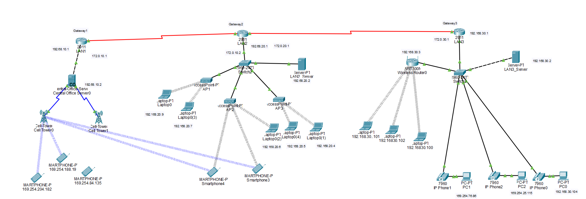
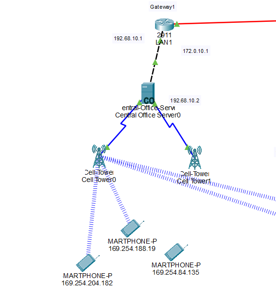
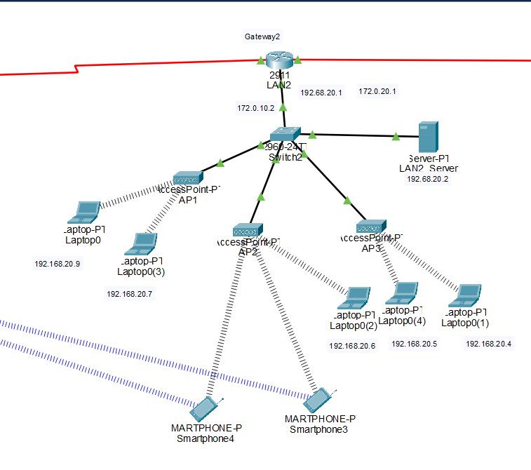
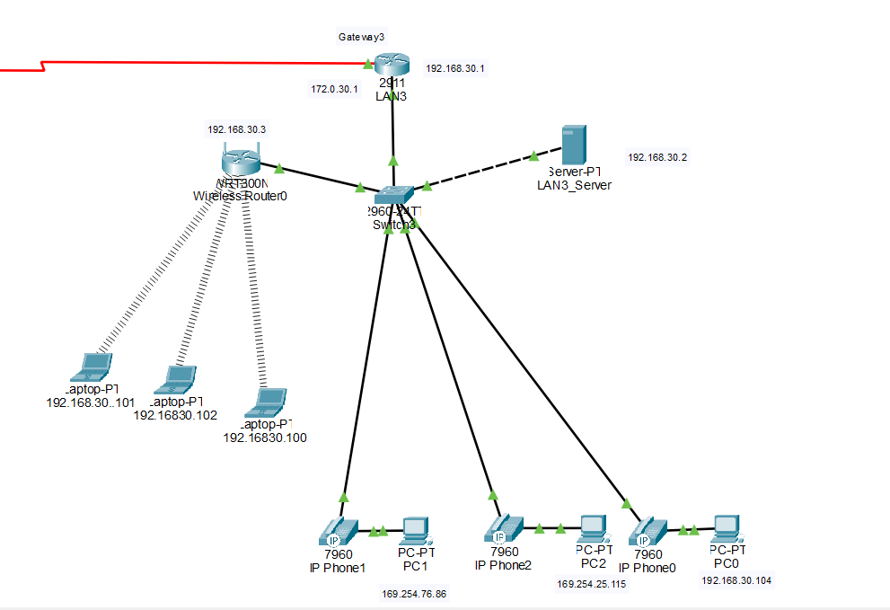
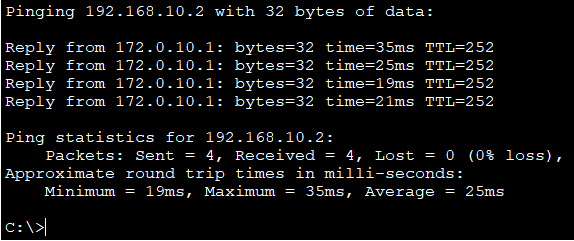
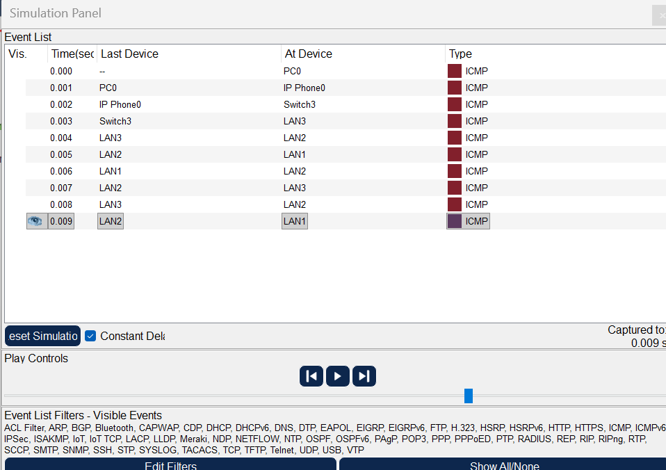
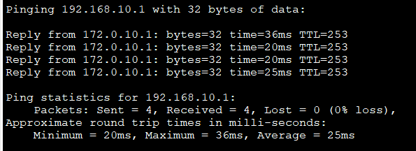

A three-LAN internetwork designed and simulated in Cisco Packet Tracer, modeling a 4G/5G-style architecture carrying both voice and data traffic.

The backbone: Each LAN reaches the internetwork through its own 2911 gateway over serial links, using static public addresses (172.0.10.1, 172.0.20.1, 172.0.30.1). Internally, every LAN runs private addressing via DHCP, with NAT overload (PAT) on each gateway so private hosts share the public interface across the serial backbone.
LAN 1: Cellular
A Central Office Server (192.68.10.2) providing DHCP, two cell towers, and three smartphones. Devices authenticate through the carrier infrastructure before receiving service, and NAT hides every internal address from the outside network.

LAN 2: WiFi
A basic service set: three access points serving five laptops and two smartphones, secured with WPA2-PSK and AES. Every client must supply the pre-shared key before it can associate and pull a DHCP lease.

LAN 3: Wired + VoIP
Three Cisco 7960 IP phones daisy-chained with three PCs, so each phone's built-in switch port passes data through to its PC while carrying voice on a dedicated voice VLAN. VLAN segmentation separates voice from data at the switch, with WPA2-PSK protecting the wireless segment.

Verification
I traced ICMP traffic in Simulation mode from a PC in LAN 3 through the IP phone and switch, across all three gateways. End-to-end pings returned 0% packet loss, confirming DHCP, NAT, VLAN, and inter-LAN routing were all working together.

Trace detail
The Packet Tracer simulation panel shows each hop the packet takes across the serial backbone, from the originating PC in LAN 3 through every intermediate gateway.

End-to-end pings returned 0% packet loss, confirming DHCP, NAT, VLAN, and inter-LAN routing were all working together.
